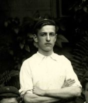
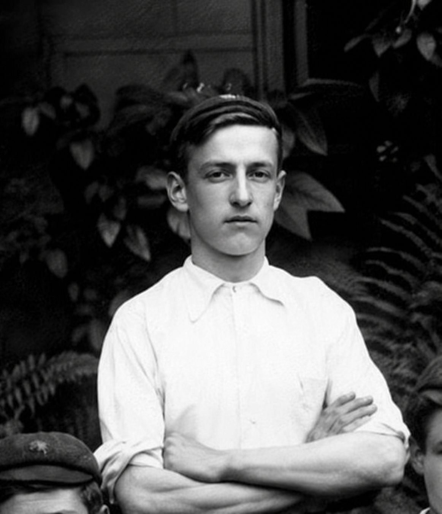

George Henry Chatham


George’s life began in Harrow, where he attended the Lower School of John Lyon and played cricket for the school’s First Eleven. He later built a career as a bank cashier before leaving civilian life to serve with the Royal Fusiliers during the First World War.
Civilian Life - George Henry Chatham was born in 1887 and baptised at St Mary’s Church, Harrow, on 14 September that year. He was the son of James Henry Chatham, a bootmaker and dealer, and Jane Rebecca Chatham. The family lived in Harrow, and by 1911 George was living at home at 68 High Street with his parents and several of his brothers and sisters.
George attended the Lower School of John Lyon, and a 1903 school photograph is believed to show him as a 15-year-old pupil. He was also a member of the school's Cricket First Eleven in 1903.
Around 1904, at about the age of 17, George began working for Parr's Bank. By the 1911 Census he was employed as a bank cashier, and his place of work was Parr's Bank's Wembley branch.
Military Life - Following the outbreak of the First World War, George left his position at the bank and joined the army. He initially served with the 10th Battalion, Royal Fusiliers, as a Sergeant, with the service number 49. He was subsequently commissioned as a Second Lieutenant in the Royal Fusiliers. The 10th Battalion, Royal Fusiliers, was known as the Stockbrokers' Battalion and included men from London's financial sector. The battalion served in France and took part in fighting including the Somme and Ypres.
George was killed in action on 23 November 1916, aged 29, during the fighting on the Somme. A report published in the Harrow Observer in September 1917 recorded that he had been reported missing after going out with a bombing party, and that no member of the party had been heard from afterwards. George has no known grave and is commemorated on the Thiepval Memorial to the Missing on the Somme in France.